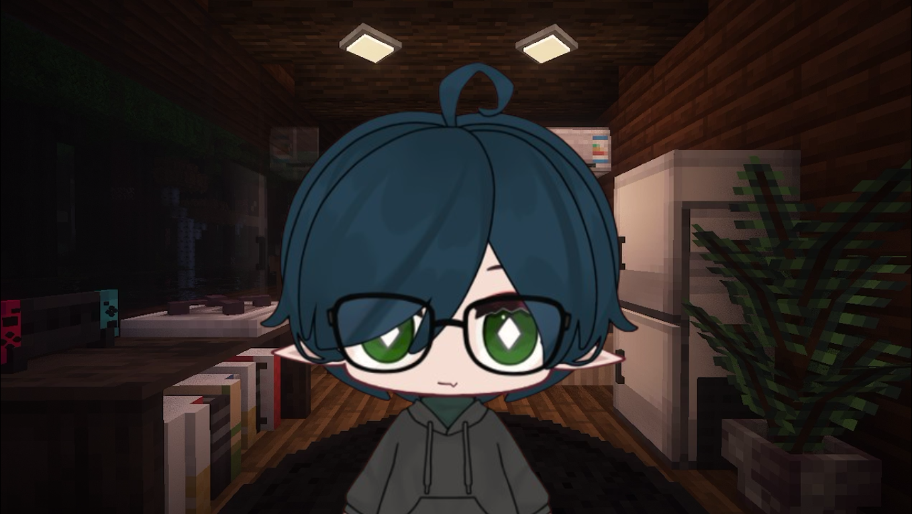

Bem-vindo ao meu site!
Aqui você encontrará algumas histórias que eu criei, coisas que eu gosto, informações sobre mim e meu canal do YouTube. Explore as abas acima para saber mais!
Histórias
Bem-vindo à seção de histórias! Aqui você pode encontrar algumas histórias que eu mesmo fiz, espero que goste!
Sobre Mim
Olá! Eu sou o Niko, um pequeno cientista e Vtuber apaixonado por histórias, jogos, series e filmes. Desde pequeno, sempre gostei de ouvir e contar histórias. Aqui no meu site, compartilho essas histórias que eu criei com tanto carinho, então eu espero que você goste!.
Canal do YouTube
Eu faço videos e lives no Youtube, ainda não tenho datas e horarios especificos de quando eu entro ao vivo ou postagem de videos, meio free-style da vida KKKK, então não deixe de conferir meu canal e se inscrever. Lá, eu conto histórias, faço gameplays e lives, faço análises de filmes, series, jogos e muito mais. Clique no link abaixo para visitar meu canal:
24 Horas
16 de maio de 2022 – 19:00
Mais um dia comum no metrô, como sempre, horário de pico e completamente exausto por conta do trabalho. Meu dia foi literalmente uma merda, como meu chefe e meu trabalho também, mas infelizmente é um mal necessário, já que moro sozinho. Desde que briguei com meus pais e saí de casa tem sido assim, sem amigos, sem família e sem nada.
Uma das únicas coisas boas daquela empresa é a Agnes. Eu só consigo pensar nela enquanto estou lá, ela vive sorrindo pra mim. O sorriso dela é uma das coisas mais bonitas que eu já vi. Eu adoraria chamar ela para sair, mas dane-se, eu não tenho a menor chance com ela.
Finalmente chega na minha estação, hora de ir para casa. Moro a uns 2 quarteirões daqui, dá para ir andando tranquilamente. É meio perigoso, mas se eu morresse, ninguém iria ligar. Só eu e meus fones, enquanto faço o mesmo caminho repetitivo para voltar para casa. Quando passando por um beco, aparece um homem, uma mulher, não sei dizer ao certo, bem na minha frente, com quase 2 metros, usando um capuz que cobria todo seu rosto, mas eu não ligo, não tenho medo da morte.
O homem fica estático, como se estivesse me encarando. Pego no meu celular com medo de ser um assalto. Merda, ainda estava pagando meu celular e não queria perder ele. Ele se aproxima de mim, agora, consigo ver o rosto que o capuz escondia. Uma feição completamente pálida e sem vida. Eu tentei correr, mas meu corpo não respondia, eu de alguma forma estava congelado. Minha música, que tocava de fundo, parou de repente sem eu pausar. E então, só consigo escutar uma voz suave, aparentemente de uma mulher, ecoando no beco.
– Você não me teme mesmo, não é, Davi? – Diz a voz – Consigo sentir o cheiro do medo de todos a quilômetros de distância, mas você? Você nem parece se importar.
Não consigo responder, mais aquilo parece ler os meus pensamentos.
– Quem sou eu? Eu sou a morte.
Eu estou delirando, isso não é real, penso para mim mesmo.
– Muito pelo contrário, sou muito mais real do que você pensa, garoto. Ando por aí todos os dias, sou quase invisível, mas existo.
Eu não posso morrer hoje, daqui uma semana é meu aniversário, iria receber uma visita de um pessoal da escola, quase uma festa, provavelmente seria o dia mais interessante do ano inteiro.
– Ora, você não dizia não ter medo de mim? Por que isso agora? – Diz a coisa rindo da minha cara, com uma risada maligna e ao mesmo tempo suave. Após uma pequena pausa, ela continua – Davi, irei fazer uma pergunta, darei uma chance de responder, mas pense bem, isso pode mudar o seu destino. O que você faria se hoje fosse o seu último dia de vida?
Meu corpo volta ao normal, parece que realmente tive a chance de responder.
– Meu último dia? – Digo para a coisa – Eu não sei, tenho tantas coisas para fazer. Talvez conversar com a Agnes, sempre fui apaixonado nela. Me matricular na faculdade de Astronomia, sempre foi meu sonho. Sei que seria meu último dia, mas não queria morrer como alguém que não estudou. Procurar um emprego melhor, morrer naquela merda não seria nada digno. Me resolveria com meus pais também, sinto muito a falta deles, brigamos por besteira, mas eu sempre fui muito orgulhoso. E eu acho que sairia uma última vez, faz tanto tempo que não faço isso. Viajaria para outro país, sempre foi meu sonho mas nunca tive coragem. Marcaria um encontro com meus amigos de infância, alguns tentam entrar em contato de vez em quando, mas eu sou o único dentre eles que não tem nada da vida, todos são formados, casados e felizes, sinto vergonha de mim as vezes. Se hoje fosse meu ultimo dia, eu viveria tudo o que ainda não vivi, seria feliz como nunca fui.
Então aquela doce voz volta a ecoar.
– Então corra, Davi, o tempo está acabando.
16 de maio de 2022 – 07:00
O despertador está acordando mais alto que o normal, acordo assustado. Aquilo foi um sonho? Só pode ter sido, não, foi real demais. Tenho que ir para o trabalho, olho no meu celular e vejo uma mensagem de um número desconhecido, “Você tem 24 horas”. Deve ter sido algum mal-entendido, provavelmente erraram o número, ignoro isso e me arrumo para ir trabalhar. Andando até a estação, passo por aquele beco, uma sensação estranha percorre por todo meu corpo, fico todo arrepiado.
Chegando na empresa, vejo a Agnes, linda como sempre, mas dane... não, hoje não.
– Bom dia Agnes. – Digo sem jeito.
– Bom dia. – Ela diz sorrindo.
Ah, aquele sorriso...
– Vai fazer o que hoje depois do expediente? – Pergunto.
– Nada, por que? – Ela diz, surpresa com a pergunta.
– Quer ir tomar alguma coisa comigo? – Digo juntando toda a coragem.
– Claro, eu sempre quis. – Me diz enquanto me dá um beijo no rosto.
Caraca, deu certo...
Quase não consigo trabalhar pensando naquela conversa com a suposta morte. E se for real? E se eu realmente morrer? Chega o horário de almoço e resolvo ligar para a minha mãe.
– Alô, quem fala? – Diz minha mãe no telefone.
– Oi mãe, sou eu... eu sei que não nos falamos há muito tempo, mas eu sinto muito a sua falta, me perdoa. – Falo, segurando para não chorar.
– Eu achei que nunca mais falaria comigo. – Diz ela com a voz trêmula de quem começou a chorar.
Conversamos mais um pouco e eu desligo. Marquei de ir almoçar com ela amanhã, se é que eu vou estar vivo... Termino minhas tarefas e vou para a área social para matar o tempo. Quando meu celular vibra, com a mensagem daquele número, “corra Davi, corra”. Merda, aquilo foi real? Mas dane-se já fiz tudo o que eu queria, meu dia está ótimo.
18:00
Fim do expediente, encontro a Agnes e vamos para um bar. Depois de muita conversa e uns beijos, me despeço e vou embora, acho que estou apaixonado. Voltando para casa, metrô lotado como sempre, fones no ouvido, estou mais que feliz. Minha estação chegou, hora da verdade. Andando até em casa, vejo aquele maldito beco, novamente aquela sensação, sinto calafrios, mas para a minha surpresa, nada acontece, sabia que tinha sido um sonho.
Chegando em casa tomo um banho e vou deitar, mas antes, pesquiso um pouco sobre a faculdade de Astronomia, preços e etc. Vou viver, por que não estudar? Sem eu mesmo ver, pego no sono.
17 de maio de 2022 – 07:00
Despertador tocando, acordo novamente assustado, eu tô vivo!! Olho no meu celular, mais uma mensagem, daquele número, “Você tem 24 horas”. Que? Mais 24 horas?? Só pode ser brincadeira de alguém. Mas termino de me arrumar e vou para o trabalho. Chegando lá, vejo a Agnes, dou um beijo nela e conversamos um pouco, tinha esquecido de pegar o número dela, a felicidade era demais. Subo para o meu andar.
12:00
Horário de almoço, vou encontrar a minha mãe. Ela continua linda como sempre, ver ela tirou um peso imenso das minhas costas, nos abraçamos fortemente, almoçamos e eu volto para trabalhar.
18:00
Hora de ir para casa. Mas antes, dou uma passadinha na faculdade para dar entrada na matrícula. Ligo para meus amigos de infância, 2 deles estudavam lá, tem um bar perto, por que não, né? Chego em casa, tomo um banho, faço a janta, como e vou conversar com a Agnes. Eu realmente estava amando, há quanto tempo que eu não sentia algo assim?
Me preparo para ir dormir, mas o telefone toca, é aquele número das mensagens, resolvo atender.
– Quem é? – pergunto.
– Você está pegando o jeito, Davi, te darei mais 24 horas – Diz aquela doce voz, me lembro instantaneamente, é a voz da morte.
O telefone desliga na minha cara, fico paralisado, aquilo realmente foi real, mas por que mais 24 horas? Eu já tive 48 até então. Durmo mal pensando naquilo.
18 de maio de 2022 – 07:00
Despertador tocando, acordo feliz, tenho mais um dia e hoje eu vou apresentar a Agnes aos meus amigos. Não é um namoro, mas estamos ficando. Tudo acontece rotineiramente. 18:00, partiu, fomos ao Outback, é caro, mas é muito bom... nunca tinha experimentado. Logo após, fomos para minha casa, eu e a Agnes, ainda bem que tinha limpado tudo. Colocamos um filme para assistirmos juntos, mas nenhum dos dois estava interessado nisso, ficamos e depois dormimos juntos, abraçados.
16 de maio de 2032 – 09:00
– Amor, levanta, vamos perder o voo – Acordo com a Agnes me chamando.
10 anos se passaram desde a minha conversa com a morte, recebi aquelas mensagens só no primeiro mês. Desde então tudo melhorou, eu e a Ag estamos há 10 anos juntos, adotamos dois gatos, uma chamada Feyre e outro chamado Rhysand, ela pegou esses nomes dos livros que ela gosta, eu gostei dos nomes. Me formei em Astronomia, estou trabalhando junto com outros astrônomos em um projeto para descobrir novas estrelas, nunca pensei que conseguiria enxergar de tão longe. Hoje estamos indo para Veneza, a cidade do amor, comemorar os 10 anos.
– Vamos logo – Ela grita, impaciente.
– Tô descendo – Respondo para ela.
Mas antes de sair, o telefone toca, aquele número, droga, depois de tanto tempo.
– Alô – Digo.
– Você mudou hein, garoto... – Diz a voz calmamente.
– Nunca mais nos falamos, mas eu entendi. – Respondo, meu corpo estava normal, sem aquela sensação.
– Entendeu o que? – Pergunta a voz. – Você não sentia medo de mim, não sentia medo da morte, porque já estava morto.
– Como assim? – Pergunto, sem entender ao certo o que ela quis dizer.
– Você não tinha um propósito. Já estava morto. Aquela conversa foi o necessário para te fazer viver, desde então, você vive como se sempre fossem suas últimas 24 horas. Até mais, Davi, nunca pare de correr.
Autor: Niko
29/05/22
História 2
digitando...
História 3
digitando...